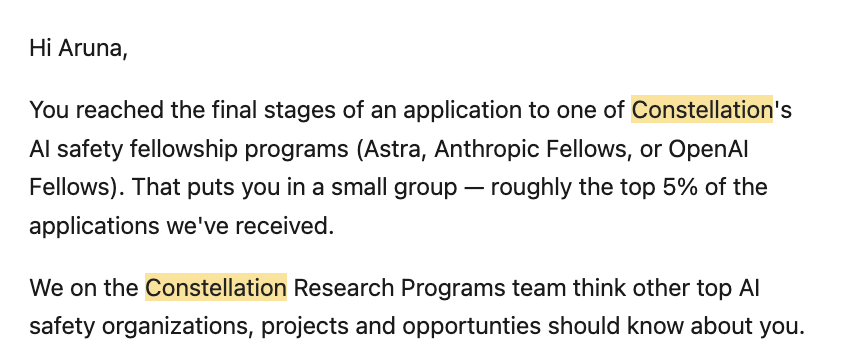

Future of technical Interviewing?
why does Anthropic care if you code
In the spring, I got referred to interview for an AI research fellowship at Anthropic. Three months and five rounds later, I was NOT offered the position lol.
For a number of reasons, it worked out nicely that I was rejected. But I did gain some insight into why technical experience is still valued at companies that claim to have extinguished coding.
I'll walk through the interview process I experienced for a safety research fellowship, then share my thoughts on how each round reflects technical ability. In MY OPINION, of course.
Round 1: Technical Assessment 60 minutes
After the initial application screening (resume + three sections of writing), they sent me a technical assessment through CodeSignal. This was pretty far from a LeetCode assessment. Instead, they gave me instructions to write helper functions for an internet protocol in six steps.
It took around 20 minutes to read the existing code and tests, then 40 minutes to write helper functions as they added complexity to the protocol at each step. It was lowkey hilarious how long the instructions were, considering that each of the first two helper functions could be finished in under five lines of code. The most complex data structure I needed was an array.
Round 2: Debugging 90 minutes
This shit was lowkey cooked. CodeSignal gave me a few files of code that used a recursive tree, with six failing tests. I was allowed to set breakpoints and debug with pdb++. Like before, you could simply read several of the failing tests and see that the fix was only a few lines. I think I only resolved half of them. Very difficult assessment.
Round 3: Reference Letter Stuff
Three of the PhD advisors I had in undergrad wrote my letters. They had to write about my research intentions and how I compared to people they'd worked with before at similar companies or labs.
Round 4: Take-Home 5 hours
The task was to use an LLM of your choice to build on one of their prior research pieces, providing good statistical evidence, tests, and clear visualizations. I literally just wrote some hypotheses, set up multiple agents to talk with each other, and spent $80 on Claude Pro Max. Then I went through the results and made visuals that made sense.
One tricky thing: they'd added bugs to the code, like putting the test set in the training code. That's hard to catch unless you do a code quality check first.
Round 5: Final Rapid Research Interview 15 minutes
Up until this point, I wasn't sure if this was even a real Anthropic interview because Constellation was sending the assessment emails. However, this part actually had a human to talk to who was on the Anthropic research team.
They would present a problem, like safety testing black-box models, and ask for my approach while adding constraints. The interview was only 15 minutes, but there were two research problems to walk through.
I highly recommend listening to the Anthropic research problem podcast discussions to prep for these.
Takeaways
I didn't score that high on the two technical rounds and still passed, so that suggested to me that being able to write a ton of code was a low priority.
I do think I did fairly well after receiving this email, so I think this blog dump has some merit :)

Unlike LeetCode-style interviews for SWE positions, there isn't much memorization of data structures that will help here.
Reading and discussing seem to be a greater focus than writing code, which seems like a very accessible entry point for many!
Overall, I feel optimistic that knowing how to write code is useful because of how it helps you approach problems and modularize them. But it's less essential that you can write code at lightning speed.
All of this is speculation and could very well change, but I hope to bring some of these lessons with me as we approach technical hiring for Koel!
Anyways, glad I got rejected because I later got my SPC fellowship and continued Koel. To the moon!